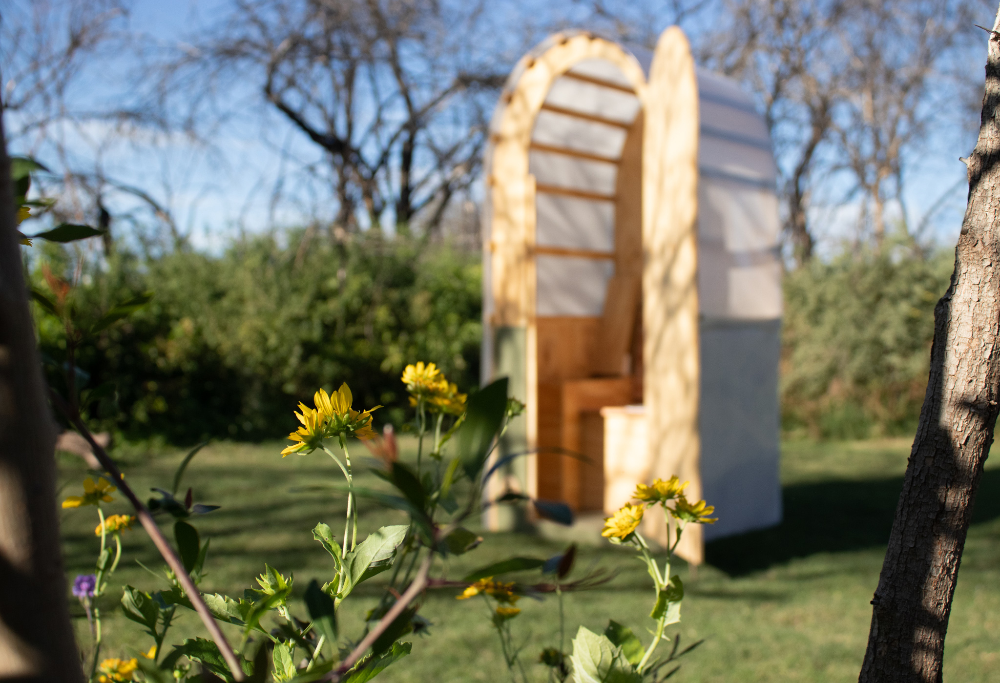

Mini Module
The Mini is a lightweight, flat-packed dry toilet designed for disaster relief, humanitarian missions and off-grid camps. Each unit operates independently of any water or sewer network and uses an efficient composting system.
- Fast deployment: assembles in minutes; no heavy machinery or infrastructure needed.
- Odorless & hygienic: low humidity and absorbent material prevent germs and smells.
- Off-grid: works without plumbing or electricity; optional solar power modules available.
- Eco-friendly: waste is converted to compost for parks and gardens.
- Compact & modular: ships flat and can be expanded with accessories.


How It Works
Assembly
For specifications, quantities or pricing, get in touch — we will respond within 48 hours.
Request Pricing